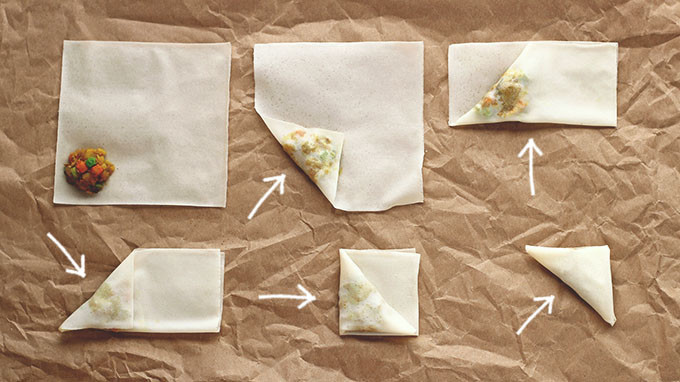

samosas
∆ spicy wedding triangles ∆
∆ congratulations, alison and luiza! ∆
∆ makes 25 ∆
∆ congratulations, alison and luiza! ∆
∆ makes 25 ∆
- spring roll wrappers / filo pastry
(if you're in egg house we left some in the freezer)
- 2 big potatoes
- half a bag frozen green peas
- 3 green chillies
- 1 sweet onion, diced
- 1 carrot, diced
- black onion seeds
- cumin seeds
- garam masala
- much garlic
- mustard seeds
- put the potatoes in the microwave / a pan of salted boiling water and cook till soft and mashable
- heat oil in a pan, and toast the whole spices. when fragrant, add in the garlic, then add the chopped onions when fragrant and fry on a low heat
- add in the chopped carrot and turmeric and garam masala, and fry till soft and translucent
- roughly mash the potatoes. stir in with the green peas into the onions and carrots, add salt to taste (quite a bit)
- as the mixture cools a bit, break out the wrappers. this guide is pretty good for folding with square wrappers
- get a deepish pan, and fill with 1.5in or so of veg oil. heat till it gets pretty hot, then turn the heat down so it maintains the temperature. fry a couple of samosas at a time till they're brown and crispy. put on kitchen towel to drain the excess oil
{kind=link}
These guys are vegan, but we think it would be really good with beef/lamb!